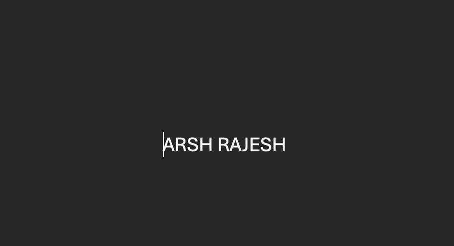

Who I am

I’m ARSH RAJESH, a Computer Science student with a strong interest in Cloud Computing, DevOps, and Cloud Pre-Sales. I enjoy working at the intersection of technology and business, where I can design solutions, explain them clearly, and understand real-world use cases. I have hands-on experience with tools and concepts related to cloud platforms, automation, and deployment workflows, and I actively apply this knowledge through practical projects. My goal is to continue developing both my technical skills and communication abilities to build scalable solutions and confidently engage with clients and stakeholders in cloud-focused roles.
I enjoy improving my skills through projects and practice. I like creating structured layouts using semantic tags and organizing content with div blocks while using span to highlight important words.

My hobbies & interests

One of my favorite hobbies is learning new skills and staying consistent with my goals. I also enjoy working on projects that help me build confidence in HTML and CSS.

Outside of study, I enjoy exploring new ideas, improving productivity, and building a portfolio that clearly demonstrates my abilities.